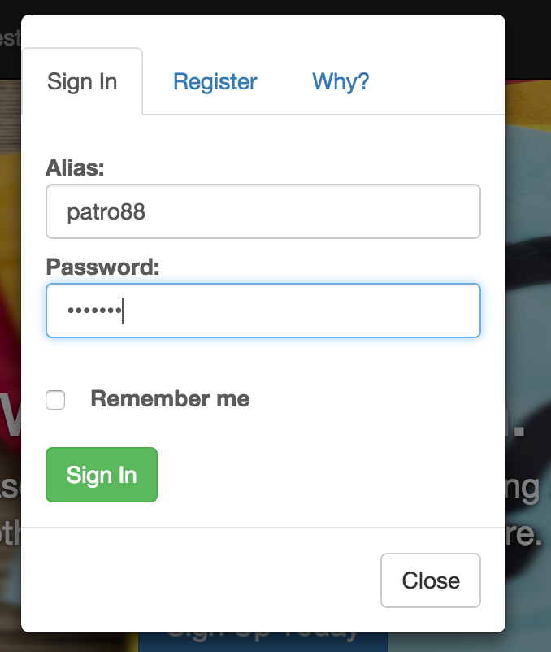

This experiment concentrates on the login functionality. Login is done using passport JS local strategy and data is verified from the UserModel. Refer previous exeriment on how to configure passort and do a registration to enter a record in the database. In this experiment, the user is prompted a dialog box with user name and password and when he clicks sign in button, the login service is called.
Go to my project page and click login.
Go the project link and register yourself. A record will be created for you in the database and you can sign in using your credentials to view the profile page.

Passport configuration is done first. Local Strategy is configured. Here I specified that when one record matching the username and password is found
then I allow to login , otherwise I return false.
Also, I define the two methods serializeUser and deserializeUser required by passport to define the user to be stored.
passport.use(new LocalStrategy({
usernameField: 'userid',
passwordField: 'password'
},
function(username, password, done)
{
UserModel.findOne({userid: username, password: password}, function(err, user){
console.log(user);
if (err) {
return done(err); }
if (!user) {
return done(null, false); }
return done(null, user); })
}));
passport.serializeUser(function(user, done) {
done(null, user);
});
passport.deserializeUser(function(user, done) {
done(null, user);
});
After this, I declared the login service where I introduced a interface passport.aunthenticate('local')
to authenticate user before allowing login.
Also I added the /profile service to be called just after login is performed to take user to profile page.
app.post("/login", passport.authenticate('local'), function(req, res){
var user = req.user;
console.log(user);
res.json(user);
});
app.get("/profile", auth, function(req, res){
var user = req.user;
UserModel.findOne({userid: user.userid, password: user.password} , function(err, users){
res.json(users);
})
});
In the client side, we add the login method where we call teh login service. After login is done and we receive success, I added an additional call to profile service to load the profile page.
$scope.login = function (user) {
$http.post("/login" , user)
.success(function (response) {
console.log(response);
$rootScope.currentUser = response;
$location.url("/profile");
$http.get("/profile")
.success(function(users)
{
$scope.profile = users;
});
angular.element('#modalClose').trigger('click');
});
};